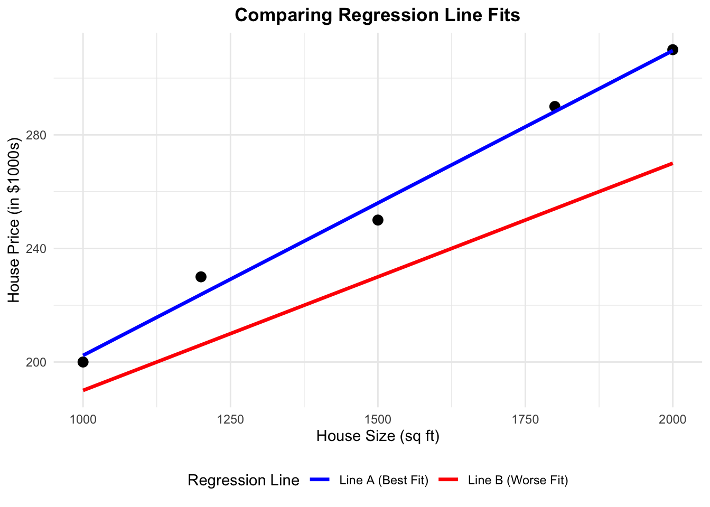

mindmap
root((Regression
Analysis)
Continuous <br/>Outcome Y
{{Unbounded <br/>Outcome Y}}
)Chapter 3: <br/>Ordinary <br/>Least Squares <br/>Regression(
(Normal <br/>Outcome Y)
Discrete <br/>Outcome Y
3 Zestylicious Ordinary Least-squares Regression
Fun fact!
Zestylicious! That mouth-puckering, lemon-squirted, totally tangy kick!
Learning Objectives
By the end of this chapter, you will be able to:
- Explain how Ordinary Least-squares (OLS) estimates relationships by minimizing the sum of squared residuals.
- Determine when OLS is an appropriate modeling choice.
- Fit an OLS model using
PythonorR. - Interpret regression coefficients to assess the impact of predictors on the response variable.
- Check key OLS assumptions, including: linearity, independence, homoscedasticity, and normality of residuals.
- Evaluate model performance using \(R\)-squared and error metrics such as mean absolute error (MAE), mean squared error (MSE), and root mean squared error (RMSE).
3.1 Introduction
When looking at data, we often want to know how different factors affect each other. For instance, if you have data on student finances, you might ask:
- How does having a job affect a student’s leftover money at the end of the month?
- What impact does receiving a monthly allowance have on their net savings?
Once you have this financial data, the next step is to analyze it to find answers. One straightforward method for doing this is through regression analysis, and the simplest form is called Ordinary Least Squares (OLS).
3.2 What is Ordinary Least Squares (OLS)?
Ordinary Least Squares (OLS) is a fundamental method in regression analysis for estimating the relationship between a dependent variable and one or more independent variables. In simple terms, OLS is like drawing the best straight line through a scatterplot of data points. Imagine you plotted students’ net savings on a graph, and each point represents a student’s financial outcome. OLS finds the line that best follows the trend of these points by minimizing the overall distance (error) between what the line predicts and what the actual data shows.
OLS is widely used because it is:
- Simple: Easy to understand and compute.
- Clear: Provides straightforward numbers (coefficients) that tell you how much each factor influences the outcome.
- Versatile: Applicable in many fields, from economics to social sciences, to help make informed decisions.
In this chapter, we will break down how OLS works in plain language, explore its underlying assumptions, and discuss its practical applications and limitations. This will give you a solid foundation in regression analysis, paving the way for more advanced techniques later on.
3.3 The “Best Line”
When using Ordinary Least Squares (OLS) to fit a regression line, our goal is to find the line that best represents the relationship between our dependent variable \(Y\) and independent variable \(X\). But what does “best” mean?
Imagine you have a scatter plot of data points. Now, consider drawing two different lines through this plot. Each one of these lines represent a set of predictions. They also represent a way to represent the relationship between the dependent variable \(Y\) and independent variable \(X\)
- Line A (Blue): A line that follows the general trend of the data very well.
- Line B (Red): A line that doesn’t capture the trend as accurately.

print("HelloWorld")HelloWorld3.3.1 Understanding Residuals
For each data point, the residual is the vertical distance between the actual \(Y\) value and the predicted \(Y\) value (denoted \(\hat{Y}\)) on the line. In simple terms, it tells us how far off our prediction is for each point given the same \(X\) value. If a line fits well, these residuals will be small, meaning our predictions of the \(Y\) variable are close to the actual value.
OLS quantifies how well a line fits the data by calculating the Sum of Squared Errors (SSE). The SSE is obtained by:
- Computing the residual for each data point.
- Squaring each residual (this ensures that errors do not cancel each other out).
- Summing all these squared values.
\[ SSE=\sum_{i=1}^{n} (Y_i - \hat{Y}_i)^2 \]
A lower SSE indicates a line that is closer to the actual data points. OLS chooses the best line by finding the one with the smallest SSE.
3.3.2 Quantifying the Fit with SSE
We can compare the two lines by computing their SSE. The code below calculates and prints the SSE for each line:
# Calculate the Sum of Squared Errors for the correct model (Blue)
sse_correct <- sum((df$Price - df$Predicted_Correct)^2)
# Calculate the Sum of Squared Errors for the manually adjusted model (Red)
sse_wrong <- sum((df$Price - df$Predicted_Wrong)^2)
# Print the SSEs for each line
cat("SSE for Best-Fit Line (Blue line):", sse_correct, "\n")SSE for Best-Fit Line (Blue line): 83.23529 cat("SSE for Worse-Fit Line (Red line):", sse_wrong, "\n")SSE for Worse-Fit Line (Red line): 3972 When you run this code, you’ll observe that the blue line (Line A) has a much lower SSE compared to the red line (Line B). This tells us that the blue line is a better fit for the data because its predictions are, on average, closer to the actual values.
In summary, OLS selects the “best line” by minimizing the sum of squared errors, ensuring that the total error between predicted and actual values is as small as possible.
3.3.3 Why Squared Errors?
When measuring how far off our predictions are, errors can be positive (if our prediction is too low) or negative (if it’s too high). If we simply added these errors together, they could cancel each other out, hiding the true size of the mistakes. By squaring each error, we convert all numbers to positive values so that every mistake counts.
In addition, squaring makes big errors count a lot more than small ones. This means that a large mistake will have a much bigger impact on the overall error, encouraging the model to reduce those large errors and improve its overall accuracy.
3.3.4 The Mathematical Formulation of the OLS Model
Now that we understand how OLS finds the best-fitting line by minimizing the differences between the actual and predicted values, let’s look at the math behind it.
In a simple linear regression with one predictor, we express the relationship between the outcome \(Y\) and the predictor \(X\) using the following equation. Note that OLS fits a straight line to the data, which is why the equation takes the familiar form of a straight line:
\[ Y=\beta_0+\beta_1X+\epsilon \]
Here’s what each part of the equation means:
- \(Y\) is the dependent variable or the outcome we want to predict.
- \(X\) is the independent variable or the predictor that we believe influences \(Y\).
- \(\beta_0\) is the intercept. It represents the predicted value of \(Y\) when \(X=0\).
- \(\beta_1\) is the slope. It tells us how much \(Y\) is expected to change for each one-unit increase in \(X\).
- \(\epsilon\) is the error term. It captures the random variation in \(Y\) that cannot be explained by \(X\).
This equation provides a clear mathematical framework for understanding how changes in \(X\) are expected to affect \(Y\), while also accounting for random variation. In the upcoming section, we will explore our toy dataset to showcase this equation and OLS in action.
3.4 Case Study: Understanding Financial Behaviors
To demonstrate Ordinary Least Squares (OLS) in action, we will walk through a case study using a toy dataset. This case study will help us understand the financial behaviors of students and identify the factors that influence their Net_Money, the amount of money left over at the end of each month. We will approach this case study using the data science workflow described in a previous chapter, ensuring a structured approach to problem-solving and model building.
3.4.1 The Dataset
Our dataset captures various aspects of students’ financial lives. Each row represents a student, and the columns describe different characteristics. Below is a breakdown of the variables:
| Variable Name | Description |
|---|---|
| Has_Job | Whether the student has a job (0 = No, 1 = Yes). |
| Year_of_Study | The student’s current year of study (e.g., 1st year, 2nd year, etc.). |
| Financially_Dependent | Whether the student is financially dependent on someone else (0 = No, 1 = Yes). |
| Monthly_Allowance | The amount of financial support the student receives each month. |
| Cooks_at_Home | Whether the student prepares their own meals (0 = No, 1 = Yes). |
| Living_Situation | The student’s living arrangement (e.g., living with family, in a shared apartment, etc.). |
| Housing_Type | The type of housing the student lives in (e.g., rented, owned, dormitory). |
| Goes_Out_Spends_Money | How frequently the student goes out and spends money (1 = rarely, 5 = very often). |
| Drinks_Alcohol | Whether the student drinks alcohol (0 = No, 1 = Yes). |
| Net_Money | The amount of money the student has left at the end of the month after income and expenses. |
| Monthly_Earnings | The student’s earnings from any part-time jobs or other income sources. |
Here’s a sample of the dataset:
| Has_Job | Year_of_Study | Financially_Dependent | Monthly_Allowance | Cooks_at_Home | Living_Situation | Housing_Type | Goes_Out_Spends_Money | Drinks_Alcohol | Net_Money | Monthly_Earnings |
|---|---|---|---|---|---|---|---|---|---|---|
| 0 | 1 | 0 | 658.99 | 0 | 3 | 1 | 6 | 0 | 529.34 | 0.00 |
| 1 | 3 | 0 | 592.55 | 0 | 3 | 2 | 3 | 1 | 992.72 | 941.92 |
| 1 | 4 | 1 | 602.54 | 0 | 2 | 2 | 2 | 1 | 557.30 | 876.57 |
This dataset provides a structured way to analyze the financial habits of students and determine which factors contribute most to their financial stability.
3.4.2 The Problem We’re Trying to Solve
Our goal in this case study is to understand which factors impact a student’s net money. Specifically, we aim to identify which characteristics, such as having a job, monthly earnings, or financial support, explain why some students have more money left over at the end of the month than others.
The key question we want to answer is:
Which factors have the biggest influence on a student’s net money?
By applying OLS to this dataset, we can:
- Measure how much each factor contributes to variations in net money. For example, we can determine the increase in net money associated with a one-unit increase in monthly earnings.
- Identify whether each factor has a positive or negative effect on net money.
- Understand the unique contribution of each variable while accounting for the influence of others. This helps us isolate the effect of, say, having a job from that of receiving financial support.
- Predict a student’s net money based on their characteristics. These insights could help institutions design targeted financial literacy programs or interventions to improve financial stability.
- Evaluate the overall performance of our model using statistical measures such as R-squared and p-values. This not only confirms the significance of our findings but also guides improvements in future analyses.
In summary, using OLS in this case study allows us to break down complex financial behaviors into understandable components. This powerful tool provides clear, actionable insights into which factors are most important, paving the way for more informed decisions and targeted interventions.
3.4.3 Study Design
Now that we’ve introduced our case study and dataset, it’s time to follow the data science workflow step by step. The first step is to define the main statistical inquiries we want to address. As mentioned earlier, our key question is:
Which factors have the biggest influence on a student’s net money?
To answer this question, we will adopt an inferential analysis approach rather than a predictive analysis approach. Let’s quickly review the difference between these two methods:
Inferential vs. Predictive Analysis
- Inferential Analysis explores and quantifies the relationships between explanatory variables (e.g., student characteristics) and the response variable (Net Money). For example, we might ask: Does having a part-time job significantly affect a student’s net money, and by how much? The goal here is to understand these effects and assess their statistical significance.
- Predictive Analysis focuses on accurately forecasting the response variable using new data. In this case, the question could be: Can we predict a student’s net money based on factors like monthly earnings, living situation, and spending habits? The emphasis is on building a model that produces reliable predictions, even if it doesn’t fully explain the underlying relationships.
3.4.4 Applying Study Design to Our Case Study
For our case study, we are interested in understanding how factors such as Has_Job, Monthly_Earnings, and Spending_Habits affect a student’s Net Money. This leads us to adopt an inferential approach. We aim to answer questions like:
- Does having a part-time job lead to significantly higher net money?
- How much do a student’s monthly earnings influence their financial situation?
- Do spending habits, like going out frequently, decrease a student’s net money?
Using OLS, we will estimate the impact of each factor and determine whether these effects are statistically significant. This inferential analysis will help us understand which variables have the greatest influence on students’ financial outcomes.
If our goal were instead to predict a student’s future Net Money based on their characteristics, we would adopt a predictive approach. Although our focus here is on inference, it’s important to recognize that OLS is versatile and can be applied in both contexts.
3.5 Data Collection and Wrangling
With the statistical questions clearly defined, the next step is to ensure that the data is appropriately prepared for analysis. Although we already have the dataset, it is valuable to consider how this data could have been collected to better understand its context and potential limitations.
3.5.1 Data Collection
For a study like ours, data on students’ financial behaviors could have been collected through various methods:
- Surveys: Students might have been asked about their employment status, earnings, and spending habits through structured questionnaires. While surveys can capture self-reported financial behaviors, they may suffer from recall bias or social desirability bias.
- Administrative Data: Universities or employers may maintain records on student income and employment, providing a more objective source of financial information. However, access to such data may be limited due to privacy regulations.
- Financial Tracking Apps: Digital financial management tools can offer detailed, real-time data on student income and spending patterns. While these apps provide high granularity, they may introduce selection bias, as only students who use such apps would be represented in the dataset.
Regardless of the data collection method, each approach presents challenges, such as missing data, reporting errors, or sample biases. Addressing these issues is a critical aspect of data wrangling.
3.5.2 Data Wrangling
Now that our dataset is ready, the next step is to clean and organize it so that it’s in the best possible shape for analysis using OLS. Data wrangling involves several steps that ensure our data is accurate, consistent, and ready for modeling. Here are some key tasks:
Handling Missing Data
The first task is to ensure data integrity by checking for missing values. Missing data can occur for various reasons, such as unrecorded responses or errors in data entry. When we find missing values—for example, if some students don’t have recorded earnings or net money—we must decide how to handle these gaps. Common strategies include:
- Removing incomplete records: If the amount of missing data is minimal or missingness is random.
- Imputing missing values: Using logical estimates or averages if missingness follows a systematic pattern.
In our toy dataset, there are no missing values, as confirmed by:
Encoding Categorical Variables
For regression analysis, we need to convert categorical variables into numerical representations. In R, binary variables like Has_Job and Drinks_Alcohol should be transformed into factors so that the model correctly interprets them as categorical data rather than continuous numbers. For example:
Detecting and Handling Outliers
Outliers in continuous variables like Monthly_Earnings and Net_Money can distort the regression analysis by skewing results. We use the Interquartile Range (IQR) method to identify these extreme values. Specifically, any observation falling below 1.5 times the IQR below the first quartile (Q1) or above 1.5 times the IQR above the third quartile (Q3) is flagged as an outlier. These outliers are then treated as missing values and removed:
# Using IQR method to filter out extreme values in continuous variables
remove_outliers <- function(x) {
Q1 <- quantile(x, 0.25, na.rm = TRUE)
Q3 <- quantile(x, 0.75, na.rm = TRUE)
IQR <- Q3 - Q1
x[x < (Q1 - 1.5 * IQR) | x > (Q3 + 1.5 * IQR)] <- NA
return(x)
}
data <- data |>
mutate(across(c(Monthly_Earnings, Net_Money), remove_outliers))
# Remove rows with newly introduced NAs due to outlier handling
data <- na.omit(data)Splitting the Data for Model Training
To ensure that our OLS model generalizes well to unseen data, we split the dataset into training and testing subsets. The training set is used to estimate the model parameters, and the testing set is used to evaluate the model’s performance. This split is typically done in an 80/20 ratio, as shown below:
By following these steps, checking for missing values, encoding categorical variables, handling outliers, and splitting the data, we ensure that our dataset is clean, well-organized, and ready for regression analysis using OLS.
It’s important to note, however, that these are just a few of the many techniques available during the data wrangling stage. Depending on the dataset and the specific goals of your analysis, you might also consider additional strategies such as feature scaling, normalization, advanced feature engineering, handling duplicate records, or addressing imbalanced data. Each of these techniques comes with its own set of solutions, and the optimal approach will depend on the unique challenges and objectives of your case.
3.6 Exploratory Data Analysis (EDA)
Before diving into data modeling, it is crucial to develop a deep understanding of the relationships between variables in the dataset. This stage, known as Exploratory Data Analysis (EDA), helps us visualize and summarize the data, uncover patterns, detect anomalies, and test key assumptions that will inform our modeling decisions.
3.6.1 Classifying Variables
The first step in EDA is to classify variables according to their types. This classification guides the selection of appropriate visualization techniques and modeling strategies. In our toy dataset, we categorize variables as follows:
-
Net_Moneyserves as the response variable, representing a continuous outcome constrained by realistic income and expenses.
The regressors include a mix of binary, categorical, ordinal, and continuous variables.
- Binary variables, such as Has_Job and Drinks_Alcohol, take on only two values and need to be encoded for modeling.
- Categorical variables, like Living_Situation and Housing_Type, represent qualitative distinctions between different student groups.
- Some predictors, like Year_of_Study and Goes_Out_Spends_Money, follow an ordinal structure, meaning they have a meaningful ranking but no consistent numerical spacing.
- Finally, Monthly_Allowance and Monthly_Earnings are continuous variables, requiring attention to their distributions and potential outliers.
By classifying variables correctly at the outset, we ensure that they are analyzed and interpreted appropriately throughout the modeling process.
3.6.2 Visualizing Variable Distributions
Once variables are classified, the next step is to explore their distributions. Understanding how variables are distributed is crucial for identifying potential issues such as skewness, outliers, or missing values. We employ different visualizations depending on the variable type:
Continuous Variables
We begin by examining continuous variables, which are best visualized using histograms and boxplots.
Histograms
Histograms display the frequency distribution of a continuous variable. They allow us to assess the overall shape, central tendency, and spread of the data. For example, the histogram of Net_Money helps us determine if the variable follows a roughly normal distribution or if it is skewed. A normal distribution often appears bell-shaped, while skewness can indicate that the data might benefit from transformations (like logarithmic transformations) to meet the assumptions of regression analysis. In our case, the histogram below shows that Net_Money appears roughly normal.
# Histogram of Net_Money
hist(train_data$Net_Money,
main = "Distribution of Net Money",
xlab = "Net Money",
col = "blue",
border = "white")
Boxplots
Boxplots provide a concise summary of a variable’s distribution by displaying its quartiles and highlighting potential outliers. Outliers are typically defined as data points that fall below Q1 - 1.5 * IQR or above Q3 + 1.5 * IQR. The boxplot below visualizes Net_Money and helps us quickly assess if there are any extreme values that might skew the analysis. In this case, the boxplot suggests that there are no significant outliers according to the IQR method (the method commonly used by ggplot to identify outliers).
# Boxplot of Net Money
boxplot(train_data$Net_Money,
main = "Boxplot of Net Money",
ylab = "Net Money",
col = "lightblue")
By visualizing the distribution of Net_Money with these plots, we gain valuable insights into its behavior. This understanding not only informs whether transformations are needed but also prepares us for deeper analysis as we move forward with regression modeling.
Categorical and Ordinal Variables
Categorical variables require a different approach from continuous ones because they represent distinct groups rather than numerical values. For these variables, bar charts are very effective. They display the frequency of each category, helping us understand the distribution of qualitative attributes.
For example, consider the variable Living_Situation. The bar chart below shows how many students fall into each category. From the chart, we can see that category 1 is more heavily represented, while categories 2 and 3 have roughly similar counts. This insight can be critical—if a category is underrepresented, you might need to consider grouping it with similar categories or applying techniques such as one-hot encoding to ensure that each category contributes appropriately to the model.
# Bar plot of Living Situation
barplot(table(train_data$Living_Situation),
main = "Living Situation Distribution",
xlab = "Living Situation",
ylab = "Frequency",
col = "purple")
For ordinal variables (which have a natural order but not a fixed numerical interval), you might still use bar charts to show the ranking or frequency of each level. Additionally, understanding these distributions can help you decide whether to treat them as categorical variables or convert them into numeric scores for analysis.
Exploring Relationships Between Variables
Beyond examining individual variables, it is crucial to explore how they interact with one another—especially the predictors and the response variable. Understanding these relationships helps identify which predictors might be influential in the model and whether any issues, like multicollinearity, could affect regression estimates.
Correlation Matrices
For continuous variables, correlation matrices provide a numerical summary of how strongly pairs of variables are related. High correlations between predictors might signal multicollinearity, which can distort model estimates. For demonstration, consider the correlation matrix computed for Net_Money, Monthly_Allowance, and Monthly_Earnings:
# Correlation matrix
cor_matrix <- cor(train_data[, c("Net_Money", "Monthly_Allowance", "Monthly_Earnings")], use = "complete.obs")
print(cor_matrix) Net_Money Monthly_Allowance Monthly_Earnings
Net_Money 1.0000000 0.28835746 0.75743542
Monthly_Allowance 0.2883575 1.00000000 -0.03669097
Monthly_Earnings 0.7574354 -0.03669097 1.00000000In the output, we observe a strong positive correlation (corr = 0.757) between Monthly_Earnings and Net_Money. This result is intuitive. Higher earnings typically lead to more money left at the end of the month, resulting in a higher Net_Money.
Scatterplots
Scatter plots visually depict the relationship between two continuous variables. For example, plotting Monthly_Allowance against Net_Money helps us assess whether students with higher allowances tend to have higher or lower net savings. In the scatter plot below, a slightly positive trend is visible. However, the points are quite scattered, indicating that while there may be a relationship, it is not overwhelmingly strong. Such visual insights might prompt further investigation, perhaps considering polynomial transformations or interaction terms if nonlinearity is suspected.
# Scatter plot of Monthly Allowance vs. Net Money
plot(train_data$Monthly_Allowance, train_data$Net_Money,
main = "Net Money vs. Monthly Allowance",
xlab = "Monthly Allowance",
ylab = "Net Money",
col = "blue",
pch = 19)
abline(lm(Net_Money ~ Monthly_Allowance, data = train_data), col = "red", lwd = 2)
Boxplots for Categorical Variables
For categorical predictors, boxplots are an excellent tool to compare the distribution of the response variable across different groups. For instance, examining how Net_Money varies by Living_Situation can reveal whether students in different living arrangements experience different financial outcomes. In the boxplot below, the distributions of Net_Money across categories of Living_Situation appear quite similar. This similarity may suggest that Living_Situation has little impact on Net_Money in our dataset.
# Boxplot of Net Money by Living Situation
boxplot(Net_Money ~ Living_Situation,
data = train_data,
main = "Net Money by Living Situation",
xlab = "Living Situation",
ylab = "Net Money",
col = "lightgreen")
Summary Statistics
In addition to visual exploration, descriptive statistics provide a numerical summary of the dataset that is especially useful for beginners. Summary statistics give you a snapshot of the central tendency and spread of your data, helping you quickly grasp its overall characteristics.
For instance, if you notice that the mean of Monthly_Earning is significantly higher than its median, it might suggest that a few high values (or outliers) are skewing the data.
# Summary statistics for numerical variables
summary(train_data[, c("Net_Money", "Monthly_Allowance", "Monthly_Earnings")]) Net_Money Monthly_Allowance Monthly_Earnings
Min. :-1587.52 Min. : 51.33 Min. : 0
1st Qu.: -399.87 1st Qu.: 402.50 1st Qu.: 0
Median : 78.36 Median : 500.55 Median : 291
Mean : 120.74 Mean : 501.85 Mean : 502
3rd Qu.: 618.59 3rd Qu.: 603.46 3rd Qu.:1014
Max. : 1932.42 Max. :1088.94 Max. :1763 3.6.3 Key Takeaways from EDA
Conducting Exploratory Data Analysis (EDA) allows us to gain an initial understanding of the data and its underlying patterns before moving on to model building. Through EDA, we identify the types of variables present, examine their distributions, and uncover potential issues such as skewness, outliers, or multicollinearity. This process helps to highlight which variables might be strong predictors and which may require additional transformation or treatment. For instance, a strong correlation between two variables, like Monthly_Earnings and Net_Money, signals that earnings are likely a key driver of net savings. At the same time, observing differences in distributions or spotting similar patterns across groups in boxplots can inform us about the impact of categorical factors like Living_Situation.
It is important to remember that the insights gained from EDA are preliminary and primarily serve to inform further analysis. When we explore relationships between only two variables, we might overlook the influence of other factors, which could lead to misleading conclusions if taken in isolation. EDA is a crucial step for forming initial hypotheses and guiding decisions regarding data transformations, feature engineering, and the overall modeling strategy. With this foundation, we are better prepared to build a robust Ordinary Least Squares (OLS) regression model on data that has been carefully examined and understood.
3.7 Data Modelling
After conducting Exploratory Data Analysis (EDA), we transition to the modeling stage, where we apply a structured approach to uncover relationships between variables and predict outcomes. In this section, we focus on Ordinary Least Squares (OLS) regression, a widely used statistical technique for modeling linear relationships.
OLS aims to estimate the effect of multiple predictors on an outcome variable by minimizing the sum of squared differences between observed and predicted values. This approach helps quantify financial behaviors, allowing us to interpret the impact of various factors on students’ net financial balance.
3.7.1 Choosing a Suitable Regression Model
The choice of regression model depends on the patterns identified in EDA and the objectives of our analysis. Regression techniques vary in complexity, with some handling simple linear relationships and others accounting for more nuanced effects. Below are common approaches:
- Simple Linear Regression models the relationship between a single predictor and the response variable. This approach is suitable when we suspect a dominant factor driving financial balance.
- Multiple Linear Regression extends simple regression by incorporating multiple predictors, allowing us to account for various financial influences simultaneously.
- Polynomial Regression captures non-linear relationships by introducing polynomial terms of predictors, useful when relationships observed in scatter plots are curved rather than strictly linear.
- Log-Linear Models transform skewed distributions to improve interpretability and meet regression assumptions.
- Regularized Regression (Ridge and Lasso) applies penalties to regression coefficients to handle multicollinearity and enhance model generalization by reducing overfitting.
Given that our goal is to examine how multiple factors—such as income, expenses, and living arrangements—affect students’ financial balance, we select Multiple Linear Regression via OLS. This method allows us to quantify the influence of each predictor while controlling for confounding effects.
3.7.2 Defining Modeling Parameters
Once we select OLS regression, we define the key modeling components: the response variable (dependent variable) and the predictor variables (independent variables).
Response Variable (Y):
The response variable, also known as the dependent variable, represents the financial outcome we aim to explain:
-
Net_Money: The dependent variable representing financial balance.
Predictor Variables (X):
Each predictor variable is chosen based on its theoretical and statistical relevance in explaining financial behavior:
-
Has_Job(Binary) – Indicates whether the student has a job (1 = Yes, 0 = No). -
Financially_Dependent(Binary) – Identifies students who rely on external financial support. -
Year_of_Study(Ordinal) – Represents academic seniority (higher values indicate later years). -
Goes_Out_Spends_Money(Ordinal) – Measures spending behavior on a scale from 1 to 6. -
Drinks_Alcohol(Binary) – Identifies whether a student consumes alcohol, which may impact discretionary spending. -
Monthly_Allowance(Continuous) – Represents financial support received from family or scholarships. -
Monthly_Earnings(Continuous) – Reflects the student’s personal income from work. -
Living_Situation(Categorical) – Encodes different living arrangements (e.g., dormitory, shared apartment, living with family). -
Housing_Type(Categorical) – Further distinguishes between different types of housing situations. -
Cooks_at_Home(Binary) – Indicates whether the student regularly prepares meals at home.
These predictors capture a mix of economic, behavioral, and lifestyle factors, providing a comprehensive view of the drivers of student financial balance.
3.7.3 Setting Up the Modeling Equation
With all predictors defined, the OLS regression equation models the relationship between Net_Money and the predictor variables:
\[ \begin{align} \text{Net_Money} = \beta_0 \\ & + \beta_1 \times \text{Has_Job} \\ & + \beta_2 \times \text{Financially_Dependent} \\ & + \beta_3 \times \text{Year_of_Study} \\ & + \beta_4 \times \text{Goes_Out_Spends_Money} \\ & + \beta_5 \times \text{Drinks_Alcohol} \\ & + \beta_6 \times \text{Monthly_Allowance} \\ & + \beta_7 \times \text{Monthly_Earnings} \\ & + \beta_8 \times \text{Living_Situation} \\ & + \beta_9 \times \text{Housing_Type} \\ & + \beta_{10} \times \text{Cooks_at_Home} \\ & + \epsilon \end{align} \]
where:
- \(\beta_0\) represents the intercept, or the baseline Net Money when all predictors are set to zero.
- \(\beta_1, \beta_2, ..., \beta_{10}\) are the regression coefficients, quantifying the impact of each predictor on financial balance.
- \(\epsilon\) is the error term, accounting for unexplained variability and random noise.
Each coefficient provides insight into how Net_Money changes when a specific predictor increases by one unit, holding all other factors constant. For example:
- \(\beta_5\) (Drinks Alcohol) measures the financial impact of alcohol consumption, which may reflect higher discretionary spending.
- \(\beta_6\) (Monthly Allowance) quantifies the increase in Net_Money per additional dollar of allowance.
- \(\beta_10\) (Cooks at Home) indicates how much more (or less) financially stable students are when they cook at home instead of eating out.
If significant interaction effects exist—such as students who live independently having a different financial impact from increased earnings compared to those living with family—we can extend the model by adding interaction terms.
3.8 Estimation
With the data modeling stage completed, we now move to estimation, where we fit the Ordinary Least Squares (OLS) regression model to the data and obtain numerical estimates for the regression coefficients. These estimates quantify how much each predictor contributes to the response variable, allowing us to measure their individual effects on Net Money.
The goal of estimation is to determine the best-fitting regression line by minimizing the sum of squared residuals—the differences between the observed and predicted values. This step provides a mathematical basis for analyzing financial behaviors in students.
3.8.1 Fitting the Model
To estimate the regression coefficients, we fit the OLS model to the training data using Python (statsmodels) or R (lm). The model is trained using least squares estimation, which finds the coefficients that minimize the total squared error between observed values and predictions.
In R, we can fit the regression model using the lm() function:
# Load necessary library
library(stats)
# Fit the OLS model
ols_model <- lm(Net_Money ~ Has_Job + Financially_Dependent + Year_of_Study + Goes_Out_Spends_Money + Drinks_Alcohol + Monthly_Allowance + Monthly_Earnings + Living_Situation + Housing_Type + Cooks_at_Home, data = train_data)
# Display summary of model results
summary(ols_model)
Call:
lm(formula = Net_Money ~ Has_Job + Financially_Dependent + Year_of_Study +
Goes_Out_Spends_Money + Drinks_Alcohol + Monthly_Allowance +
Monthly_Earnings + Living_Situation + Housing_Type + Cooks_at_Home,
data = train_data)
Residuals:
Min 1Q Median 3Q Max
-742.4 -144.9 14.7 157.9 675.1
Coefficients:
Estimate Std. Error t value Pr(>|t|)
(Intercept) -595.37433 46.68928 -12.752 < 2e-16 ***
Has_Job1 73.93112 39.75871 1.859 0.0633 .
Financially_Dependent1 -499.36309 15.42689 -32.370 < 2e-16 ***
Year_of_Study -96.51877 6.85478 -14.081 < 2e-16 ***
Goes_Out_Spends_Money -54.60494 3.93783 -13.867 < 2e-16 ***
Drinks_Alcohol1 -145.10637 15.74322 -9.217 < 2e-16 ***
Monthly_Allowance 1.47138 0.05200 28.295 < 2e-16 ***
Monthly_Earnings 0.94906 0.03704 25.625 < 2e-16 ***
Living_Situation 102.95241 9.32478 11.041 < 2e-16 ***
Housing_Type 56.65388 9.72781 5.824 8.38e-09 ***
Cooks_at_Home1 -96.31098 15.83074 -6.084 1.83e-09 ***
---
Signif. codes: 0 '***' 0.001 '**' 0.01 '*' 0.05 '.' 0.1 ' ' 1
Residual standard error: 216.4 on 786 degrees of freedom
Multiple R-squared: 0.9018, Adjusted R-squared: 0.9006
F-statistic: 722.1 on 10 and 786 DF, p-value: < 2.2e-163.8.2 Interpreting the Coefficients
After fitting the model, we examine the estimated coefficients to understand their impact. Each coefficient obtained from the OLS regression represents the expected change in Net_Money for a one-unit increase in the corresponding predictor, holding all other variables constant. The estimated regression equation can be expressed as:
\[ \begin{align} \text{Net_Money} = -595.37 \\ & + 73.93 \times \text{Has_Job} \\ & - 499.36 \times \text{Financially_Dependent} \\ & - 96.52 \times \text{Year_of_Study} \\ & - 54.60 \times \text{Goes_Out_Spends_Money} \\ & - 145.11 \times \text{Drinks_Alcohol} \\ & + 1.47 \times \text{Monthly_Allowance} \\ & + 0.95 \times \text{Monthly_Earnings} \\ & + 102.95 \times \text{Living_Situation} \\ & + 56.65 \times \text{Housing_Type} \\ & - 96.31 \times \text{Cooks_at_Home} \\ & + \epsilon \end{align} \]
For example:
- The intercept (\(\beta_0=-595.37\)) represents the expected financial balance for a student who has zero income, allowance, and falls at the baseline category for all categorical variables.
- A \(1 increase in Monthly Allowance (\)_6=1.47$) is associated with a $1.47 increase in Net Money, meaning students with higher allowances tend to have a higher financial balance.
These estimates provide an initial understanding of the direction and magnitude of relationships between predictors and financial balance. However, before drawing conclusions, we need to validate model assumptions and evaluate the statistical significance of each coefficient.
3.9 Goodness of Fit
After estimating the regression coefficients, the next step is to assess how well the model fits the data and whether it satisfies the assumptions of Ordinary Least Squares (OLS) regression. This evaluation ensures that the model is not only statistically valid but also generalizes well to unseen data. A well-fitting model should explain a substantial proportion of variation in the response variable while adhering to key statistical assumptions. If these assumptions are violated, model estimates may be biased, leading to misleading conclusions.
3.9.1 Checking Model Assumptions
OLS regression is built on several fundamental assumptions:
- linearity
- independence of errors
- homoscedasticity
- normality of residuals
If these assumptions hold, OLS provides unbiased, efficient, and consistent estimates. We assess each assumption through diagnostic plots and statistical tests.
Linearity
A core assumption of OLS is that the relationship between each predictor and the response variable is linear. If this assumption is violated, the model may systematically under- or overestimate Net_Money, leading to biased predictions. The Residuals vs. Fitted values plot is a common diagnostic tool for checking linearity. In a well-specified linear model, residuals should be randomly scattered around zero, without any discernible patterns. If the residuals exhibit a U-shaped or curved pattern, this suggests a non-linear relationship, indicating that transformations such as logarithmic, square root, or polynomial terms may be necessary.
To visualize linearity, we plot the residuals against the fitted values:
# Residuals vs Fitted plot (R)
plot(ols_model$fitted.values, residuals(ols_model),
main = "Residuals vs Fitted", xlab = "Fitted Values", ylab = "Residuals")
abline(h = 0, col = "red")
If the residual plot displays a clear trend, polynomial regression or feature engineering may be required to better capture the underlying data structure.
Independence of Errors
The residuals, or errors, in an OLS model should be independent of one another. This assumption is particularly relevant in time-series or sequential data, where errors from one observation might influence subsequent observations, leading to autocorrelation. If the errors are correlated, the estimated standard errors will be biased, making hypothesis testing unreliable.
The Durbin-Watson test is commonly used to detect autocorrelation. This test produces a statistic that ranges between 0 and 4, where values close to 2 indicate no significant autocorrelation, while values near 0 or 4 suggest positive or negative correlation in the residuals.
dwtest(ols_model)
Durbin-Watson test
data: ols_model
DW = 1.9581, p-value = 0.2777
alternative hypothesis: true autocorrelation is greater than 0If the test suggests autocorrelation, a possible solution is to use time-series regression models such as Autoregressive Integrated Moving Average (ARIMA) or introduce lagged predictors to account for dependencies in the data.
Homoscedasticity (Constant Variance of Errors)
OLS regression assumes that the variance of residuals remains constant across all fitted values. If this assumption is violated, the model exhibits heteroscedasticity, where the spread of residuals increases or decreases systematically. This can result in inefficient coefficient estimates, making some predictors appear statistically significant when they are not.
To check for heteroscedasticity, we plot residuals against the fitted values and conduct a Breusch-Pagan test, which formally tests whether residual variance is constant.
ncvTest(ols_model) # Test for homoscedasticityNon-constant Variance Score Test
Variance formula: ~ fitted.values
Chisquare = 0.4018794, Df = 1, p = 0.52612If heteroscedasticity is detected, solutions include applying weighted least squares (WLS) regression, transforming the dependent variable (e.g., using a log transformation), or computing robust standard errors to correct for variance instability.
Normality of Residuals
For valid hypothesis testing and confidence interval estimation, OLS assumes that residuals follow a normal distribution. If residuals deviate significantly from normality, statistical inference may be unreliable, particularly for small sample sizes.
A Q-Q plot (Quantile-Quantile plot) is used to assess normality. If residuals are normally distributed, the points should lie along the reference line.

If the plot reveals heavy tails or skewness, potential solutions include applying log or Box-Cox transformations to normalize the distribution. In cases where normality is severely violated, using a non-parametric model or bootstrapping confidence intervals may be appropriate.
3.9.2 Evaluating Model Fit
A good model should explain a large proportion of variance in the response variable.
R-Squared
Beyond checking assumptions, it is essential to assess how well the model explains variability in the response variable. One of the most commonly used metrics is R-Squared (\(R^2\)), which measures the proportion of variance in Net_Money that is explained by the predictors. An \(R^2\) value close to 1 indicates a strong model fit, whereas a low value suggests that important predictors may be missing or that the model is poorly specified.
We can retrieve the R-squared and Adjusted R-squared values from the model summary:
summary(ols_model)$r.squared # R-squared value[1] 0.9018396summary(ols_model)$adj.r.squared # Adjusted R-squared[1] 0.9005907While \(R^2\) provides insight into model fit, it has limitations. Adding more predictors will always increase \(R^2\), even if those predictors have little explanatory power. Adjusted R-squared accounts for this by penalizing unnecessary variables, making it a better indicator of true model performance.
A high \(R^2\) does not imply causation, nor does it confirm that the model is free from omitted variable bias or multicollinearity. Therefore, a strong goodness-of-fit measure should be complemented by careful assessment of residual behavior and coefficient significance.
Identifying Outliers and Influential Points
Outliers and influential observations can distort regression estimates, making it crucial to detect and address them appropriately. One way to identify extreme residuals is through residual plots, where large deviations from zero may indicate problematic data points.

Another important diagnostic tool is Cook’s Distance, which measures the influence of each observation on the regression results. Data points with Cook’s Distance values greater than 0.5 may significantly impact model estimates.
cook_values <- cooks.distance(ols_model)
plot(cook_values, type = "h", main = "Cook's Distance")
If influential points are identified, the next steps involve investigating data quality, testing robust regression techniques, or applying Winsorization, which involves replacing extreme values with more moderate ones to reduce their impact.
3.10 Results
After validating the goodness of fit, we now assess how well the model performs in both predictive analysis and inferential analysis. This step involves using the trained model to generate predictions on unseen data and evaluating how well it generalizes beyond the training set. Additionally, we analyze the estimated regression coefficients to draw meaningful conclusions about student financial behaviors.
3.10.1 Predictive Analysis
A key objective of regression modeling is to generate reliable predictions. To assess how well our model generalizes, we apply it to the test dataset—a portion of the original data that was not used for model training. If the model’s predictions align closely with actual outcomes, we can conclude that it has strong predictive power.
In R, we use the predict() function to apply the trained OLS model to the test dataset:
# Generate predictions on the test set
y_pred <- predict(ols_model, newdata=test_data)Once predictions are generated, we evaluate their accuracy using common regression error metrics.
Performance Metrics
Model accuracy is assessed using four standard error metrics:
- Mean Absolute Error (MAE) measures the average absolute differences between predicted and actual values. A lower MAE indicates better model accuracy.
- Mean Squared Error (MSE) calculates the average squared differences between predicted and actual values, penalizing larger errors more heavily.
- Root Mean Squared Error (RMSE) is the square root of MSE, making it easier to interpret since it retains the same units as the dependent variable (Net_Money).
- R-squared (\(R^2\)) quantifies the proportion of variance in Net_Money explained by the model. A higher \(R^2\) value indicates better model performance.
These metrics can be computed as follows:
# Extract response variable from test data
y_test <- test_data$Net_Money
# Calculate metrics in R
mae <- mean(abs(y_test - y_pred))
mse <- mean((y_test - y_pred)^2)
rmse <- sqrt(mse)
r2 <- summary(ols_model)$r.squared
cat(sprintf("MAE: %.2f, MSE: %.2f, RMSE: %.2f, R-squared: %.2f", mae, mse, rmse, r2))MAE: 183.76, MSE: 54660.22, RMSE: 233.80, R-squared: 0.90If the RMSE is significantly larger than MAE, it suggests that the model is highly sensitive to large prediction errors, meaning that certain extreme values are having a disproportionate impact on the model’s performance. If the R-squared value is low, it may indicate that important predictors are missing from the model or that the relationship between predictors and Net_Money is more complex than a linear relationship can capture.
3.10.2 Inferential Analysis
Beyond prediction, OLS regression allows us to interpret the estimated coefficients to uncover patterns in students’ financial behaviors. Each coefficient represents the expected change in Net_Money for a one-unit increase in the corresponding predictor, assuming all other variables remain constant.
Insights from Regression Coefficients
Here are a few insights that we can extract from the regression model result:
- The intercept (-595.37) represents the estimated financial balance for a baseline student (someone with Has_Job = 0, Financially_Dependent = 0, Year_of_Study = 0, etc.). Since a zero value for Year_of_Study is not meaningful in our context, the intercept itself has limited interpretability but serves as the starting point for estimating Net_Money based on predictor values.
- Financial Dependency (Financially_Dependent) has a strong negative effect (-499.36, p < 2e-16), meaning that students who rely financially on others (e.g., parents, guardians) tend to have significantly lower Net_Money. This could be due to a lack of independent income sources or higher expenses associated with dependence on external financial support.
- Social Spending Habits (Goes_Out_Spends_Money) also have a negative impact (-54.60, p < 2e-16), meaning that students who frequently go out and spend money experience a decline in Net_Money. This result aligns with expectations, as higher discretionary spending directly reduces available financial balance.
- Cooking at Home (Cooks_at_Home) has a negative effect (-96.31, p = 1.83e-09), which might seem counterintuitive at first. One possible explanation is that students who cook at home may already have lower budgets, leading them to adopt cost-saving habits, rather than the habit itself directly causing financial decline.
- Overall, the model explains 90.18% of the variance in Net_Money (\(R^2\) = 0.9018, Adjusted \(R^2\) = 0.9006), suggesting a strong predictive capability. The F-statistic (722.1, p < 2.2e-16) confirms that the model as a whole is statistically significant.
These findings provide a comprehensive view of student financial behaviors, reinforcing expected relationships (such as the role of allowances and earnings) while also highlighting unexpected trends (such as the negative effect of cooking at home). The next step is to integrate these results into a cohesive narrative, translating statistical insights into actionable recommendations.
3.11 Storytelling
The final step in our data science workflow is storytelling, where we translate our analytical findings into actionable insights. This stage ensures that our results are clearly understood by both technical and non-technical audiences. Effective storytelling involves summarizing insights, using visuals for clarity, and making data-driven recommendations.
Fun fact!
Zestylicious! That mouth-puckering, lemon-squirted, totally tangy kick!
mindmap
root((Regression
Analysis)
Continuous <br/>Outcome Y
{{Unbounded <br/>Outcome Y}}
)Chapter 3: <br/>Ordinary <br/>Least Squares <br/>Regression(
(Normal <br/>Outcome Y)
Discrete <br/>Outcome Y